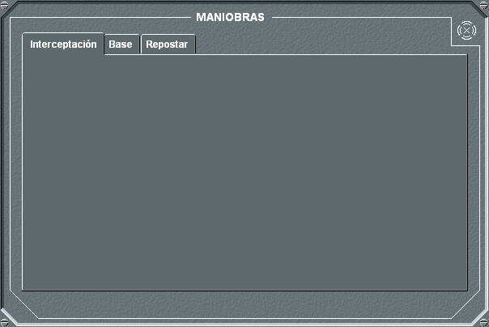
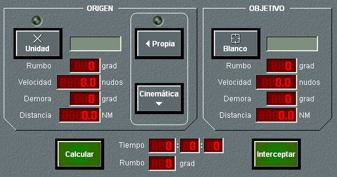
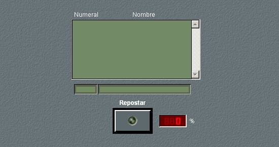

Dinámica de Terrestres
Cinemática
En este panel se muestra la situación de la unidad propia y la base en la que se encuentra, en el caso de que estuviera en una, así como el rumbo y la velocidad. También se muestra el porcentaje de daño que afecta a la velocidad.
Este panel permite realizar las siguientes maniobras:
La petición de cambio de rumbo no será atendida si se da alguna de las siguientes condiciones:
La velocidad solicitada puede ser introducida como un tanto por ciento del máximo de la unidad mediante las barras deslizantes.
Combustible / Miscelánea
Este panel de detalle agrupa las siguientes funciones:
Maniobras

El panel de detalle de la opción Maniobras presenta dos solapas en la que se puede elegir la siguiente maniobra.
Interceptación: En el panel de detalle de Interceptación se permite la introducción de todos los datos necesarios para calcular la maniobra de interceptación entre una unidad origen (que puede ser la propia o la que esté en Marca en la pantalla táctica) y una unidad objetivo.

Al pulsar el botón Unidad Propia o P. Marca, se toma como unidad origen la unidad propia o la que esté en Marca, respectivamente. Los datos de rumbo, velocidad, demora y distancia se adquieren automáticamente.
Al pulsar el botón Blanco, se toma como unidad objetivo la que esté en Hook en la pantalla táctica, o bien su posición en el caso de que el Hook no esté sobre ninguna unidad. Los datos de rumbo, velocidad, demora y distancia se adquieren automáticamente.
Al pulsar el botón Calcular, se calcula la interceptación, y si tiene solución, se proporciona el tiempo que tomaría la maniobra y el rumbo que debería tomar la unidad origen. Además, en la pantalla táctica se dibuja un esquema de la maniobra, presentando el punto de interceptación calculado.
Si la unidad propia se ha seleccionado como origen, se puede ejecutar automáticamente la maniobra de interceptación, pulsando el botón Interceptar cuando existe solución.
Base: Esta maniobra se utiliza para ir a una base o para partir desde ella. A continuación se describe cómo se ejecuta cada una de estas maniobras.
En el caso de una maniobra de embarque, la unidad base debe tener las rampas abiertas y no haber alcanzado el número máximo de unidades embarcadas, y en el caso de embarque en Helicóptero no superar la carga máxima permitida.
Si durante la maniobra se pulsa de nuevo el botón Retorno (cuya leyenda se ha sustituido por Cancelar) se cancela la maniobra, quedando la unidad con el rumbo y velocidad que tiene en ese instante.
Cuando la unidad completa el atraque en la base, de forma automática se ejecutan las siguientes acciones:
Las unidades que se muestran en la lista para poder seleccionarlas como base, son aquellas que tienen capacidad de portar unidades terrestres, y que son del mismo bando que la unidad propia. Además, una unidad puede seleccionar con el Hook cualquier unidad que detecte por sus sensores, y de la que identifique su numeral, para solicitarla como base y entrar en ella.
En el caso de una operación de desembarco, la unidad base debe tener las rampas abiertas.
Los cambios en las condiciones cinemáticas y las maniobras que admiten las unidades cumplen la tabla de incompatibilidades especificada en Modelística – Plataformas – Maniobras – Incompatibilidad de Maniobras.
Repostar: Esta maniobra se utiliza para repostar combustible desde la base en la que se encuentra..
